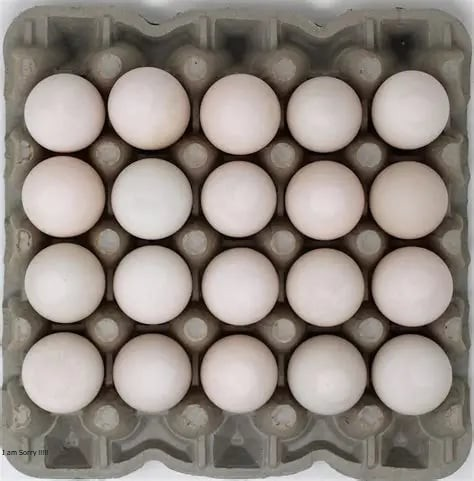

US
Estrera Balut Store
supplies fresh, farm-sourced
balut in mild, rich, and bold varieties—
perfect for food stall, restaurants,
or anyone craving authentic Filipino flavor
with consistent quality.
supplies fresh, farm-sourced
balut in mild, rich, and bold varieties—
perfect for food stall, restaurants,
or anyone craving authentic Filipino flavor
with consistent quality.
What's in the Balut?
Balut is more than a fertilized duck
egg—it's a bold, flavorful symbol of
heritage and grit. Whether you're
serving it to curious newcomers
or seasoned street food lovers, your
product delivers a rich, authentic
experience that
speaks to tradition, taste, andtrust. Every
egg is a story, and yours starts with quality.
egg—it's a bold, flavorful symbol of
heritage and grit. Whether you're
serving it to curious newcomers
or seasoned street food lovers, your
product delivers a rich, authentic
experience that
speaks to tradition, taste, andtrust. Every
egg is a story, and yours starts with quality.
Varieties
Buy now
Varities of Balut
Balut sa Puti
The most common type of
balut, Balut sa Puti is a
fertilized duck egg
incubated for 16-18
days, where the embryo
is partially developed.
The chick has started
forming, but the bones
are still soft and edible.
balut, Balut sa Puti is a
fertilized duck egg
incubated for 16-18
days, where the embryo
is partially developed.
The chick has started
forming, but the bones
are still soft and edible.
Balut Penoy
Penoy refers to a fertilized
egg that didn't fully develop
into an embryo. It's more
like a hard-boiled egg with
no visible chick. It is
creamy and rich in texture.
egg that didn't fully develop
into an embryo. It's more
like a hard-boiled egg with
no visible chick. It is
creamy and rich in texture.
Balut Mamatong
Mamatong refers to balut
where the embryo has
floated to the top of the egg
after being boiled. The term
“mamatong” comes
from the Filipino
word “tungtong,” meaning
“to float.” It is usually
incubated for 14-16 days.
where the embryo has
floated to the top of the egg
after being boiled. The term
“mamatong” comes
from the Filipino
word “tungtong,” meaning
“to float.” It is usually
incubated for 14-16 days.
Balut na Abnoy
An undeveloped duck egg,
also known as “bugok,” which
means “rotten.” In Pateros,
where balut production is
a major industry, people use
abnoy in a variety of ways.
also known as “bugok,” which
means “rotten.” In Pateros,
where balut production is
a major industry, people use
abnoy in a variety of ways.
Buy now
What kind of Costumer are you?
LESS THAN 5 TRAYS?

MORE THAN 5 TRAYS?